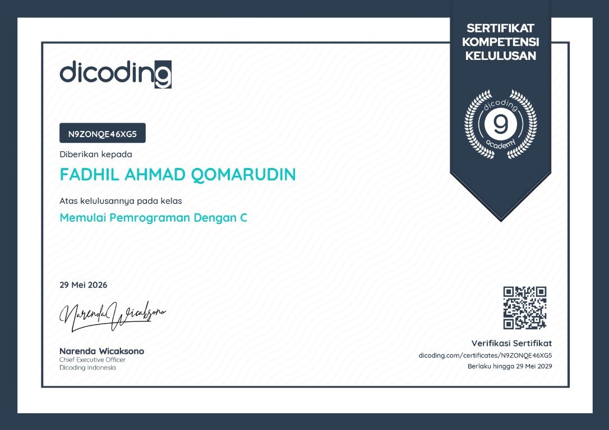
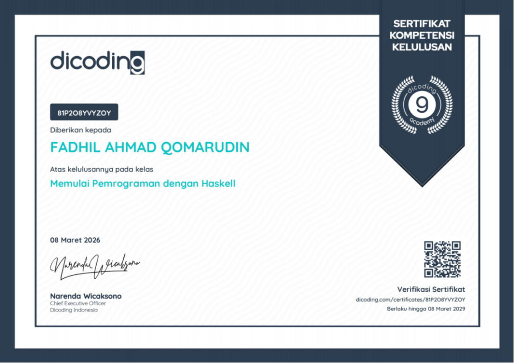
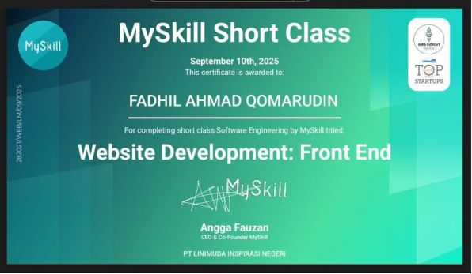

SmartCanteen Desktop
01Aplikasi desktop SmartCanteen yang dikembangkan menggunakan bahasa pemrograman C#.
Portofolio pribadi / 2026
Siswa kelas 12 TJKT · SMK Tunas Harapan Pati
Belajar. Membangun. Berkembang.
Tentang saya
Saya siswa kelas 12 jurusan Teknik Jaringan Komputer dan Telekomunikasi di SMK Tunas Harapan Pati. Ketertarikan saya pada dunia IT tumbuh dari rasa ingin tahu tentang cara aplikasi dan jaringan bekerja.
Saat ini saya belajar pemrograman, pengembangan aplikasi, basis data, dan konsep jaringan komputer. Ke depan, saya ingin terus mengasah kemampuan melalui proyek nyata dan pengalaman profesional.
Yang sedang dipelajari
Level awal di bawah ini hanya titik awal untuk diedit sesuai kemampuan sebenarnya.
Pilihan karya
Dua proyek yang saya kembangkan menggunakan C# dan teknologi web.
Aplikasi desktop SmartCanteen yang dikembangkan menggunakan bahasa pemrograman C#.
Aplikasi Money Management yang dikembangkan menggunakan Laravel, PHP, dan Vue.js.
Latar belakang
Riwayat pendidikan.
Teknik Jaringan Komputer dan Telekomunikasi (TJKT) · Pati, Jawa Tengah
Kursus & pencapaian
Sertifikat pembelajaran dan pengembangan kemampuan.

Dicoding Indonesia · Kompetensi kelulusan
29 Mei 2026
Dicoding Indonesia · Kompetensi kelulusan
08 Maret 2026
MySkill Short Class · Software Engineering
10 September 2025Mari terhubung
Ganti alamat dan tautan placeholder dengan kontak aktif sebelum membagikan portofolio.